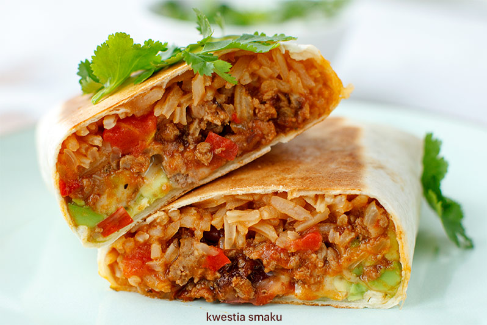

Burrito recipe

Here's a very brief overview of what you can expect when you make homemade burrito
- 1 pound lean ground beef
- ¾ cup chopped onion, divided
- 2 cloves garlic, minced
- 1 (14.5 ounce) can diced tomatoes with juice, divided
- 1 tablespoon Worcestershire sauce
- 1 ½ teaspoons chili powder
- 1 teaspoon paprika
- 1 teaspoon dried oregano
- Preheat the oven to 375 degrees F (190 degrees C).
- Place a skillet over medium heat. Cook and stir ground beef, 1/2 cup chopped onion, and garlic in the hot skillet until beef is browned and crumbly, breaking it apart as it cooks, about 8 minutes; drain excess grease. Mix in 1/2 of the can diced tomatoes, Worcestershire sauce, chili powder, paprika, oregano, 3/4 teaspoon cumin, and black pepper. Bring meat mixture to a boil over medium-high heat and cook for 5 minutes, stirring often.
- Heat refried beans and remaining 1/4 teaspoon cumin in a saucepan over medium-low heat. Keep beans warm. Mix remaining diced tomatoes, beef gravy, and enchilada sauce in a separate saucepan; bring to a boil.
- Place tortillas onto a microwave-safe plate and cover with a damp paper towel; microwave tortillas until they are soft and warm, about 30 seconds.
- Place warmed tortilla onto a work surface and spoon 1/4 of the beef mixture in a line down the center. Layer 1/4 of the bean mixture on top of beef layer and spread 1/4 cup of the Cheddar cheese over the bean layer. Fold right and left edges of tortilla over the ends of the filling and roll up tortilla to make a burrito. Place burrito, seam side down, into a 9x13-inch baking dish. Repeat with remaining tortillas to make 4 burritos.
- Pour gravy sauce over burritos in the baking dish; top with remaining 1 cup Cheddar cheese.